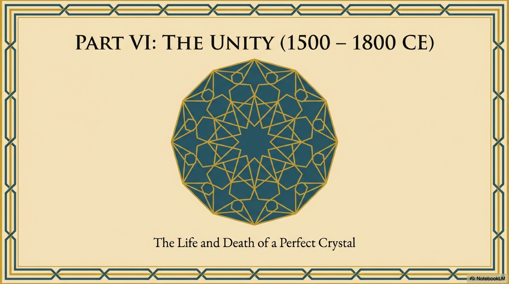
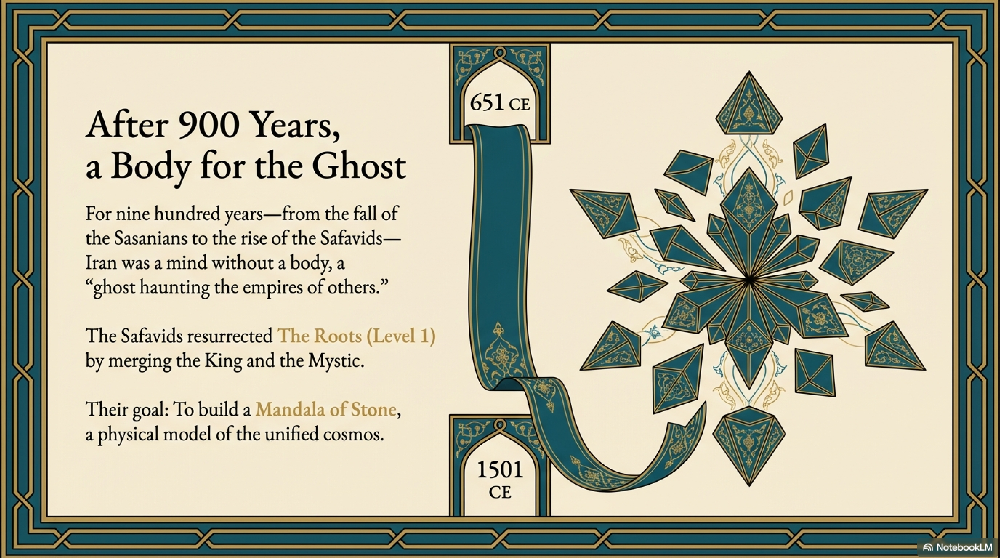
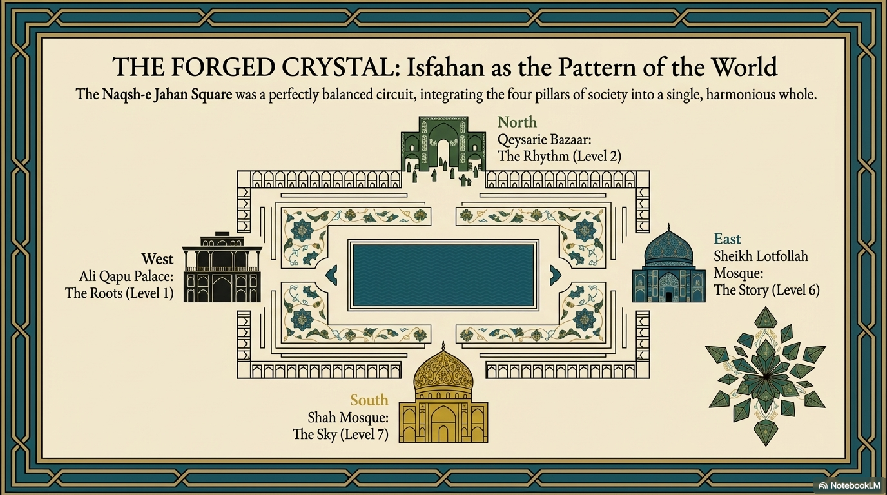
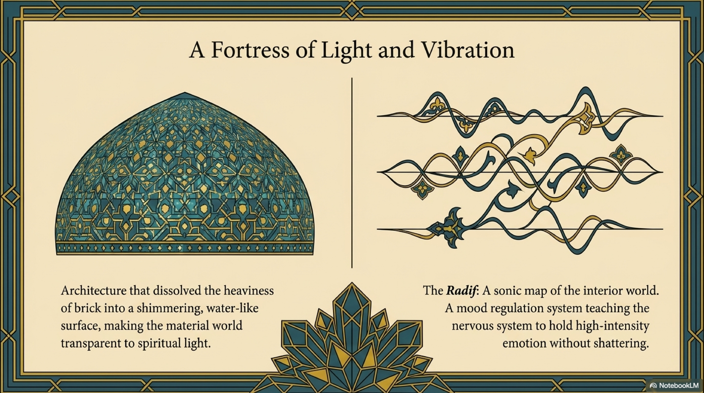
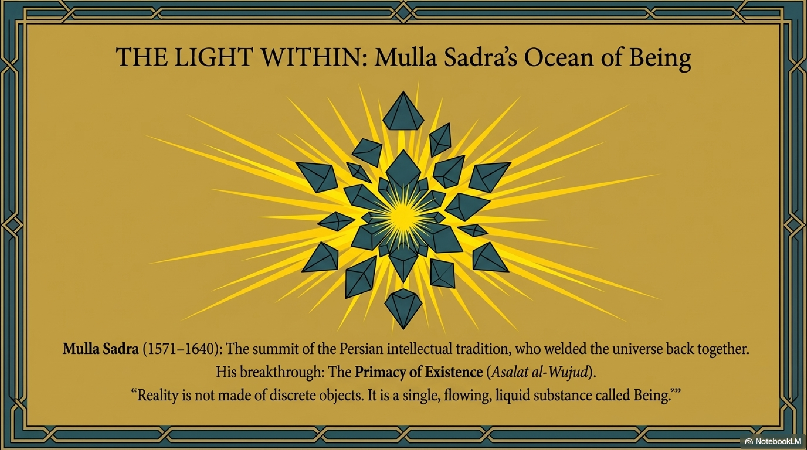

In the middle of the 3rd century AD, at the height of Sasanian power, a man named Mani appeared in the capital city of Ctesiphon. He was a painter, a physician, and a visionary genius. He called himself the Seal of the Prophets. He claimed to bring the final synthesis of Zoroaster, Buddha, and Jesus.
He was charismatic, brilliant, and deeply compelling. The King of Kings, Shapur I, was fascinated by him. The people flocked to him.
But to the structural integrity of the Persian Mind, Mani was not a savior. He was a virus.
Manichaeism represents the most dangerous Systemic Dissonance in Iranian history. It was a philosophy that took the binary logic of Zarathustra—Light versus Dark—and corrupted it into a weapon against life itself.

Zoroastrianism, as we have seen, is a World-Affirming system. It believes that Matter, The Roots (Level 1), is good. It was created by the Wise Lord. The goal of the human is to perfect the material world: to farm the land, build the state, and raise children. It integrates the entire ladder of consciousness.
Mani taught the opposite.
He taught that Matter is Evil.
In Manichaean cosmology, the soul is a spark of Light, or The Sky (Level 7), trapped in a prison of Darkness, The Roots. The body is a cage. Procreation is a crime because it traps more light in flesh. The physical world is a mistake.
The goal of the Manichaean was not to order the world, as Cyrus did, but to escape it.
In our framework, this is a Catastrophic Decoupling.
Mani severed the link between the Spirit and the Body. He rejected the State and the Biology as the realm of the Devil. He suppressed Emotion. He fetishized the Spirit as the only reality.
This is a High-Entropy Logic disguised as spirituality. If a civilization adopts this worldview, it stops building. It stops fighting entropy. It stops reproducing. It essentially commits suicide.

The Sasanian state eventually realized the danger. The reaction was led by the High Priest Kartir.
History often paints Kartir as a villain: a rigid, intolerant theocrat who persecuted minorities. And indeed, his methods were brutal. He was the embodiment of Coercion.
But structurally, Kartir was the Immune System of the Persian Mind.
He recognized that Manichaeism was an existential threat to the coherence of the empire. You cannot run a civilization if your citizens believe that paying taxes, serving in the army, and having children are acts of evil. You cannot maintain the stability of The Roots with a philosophy that hates matter.
Kartir had Mani arrested and executed. He purged the Manichaeans from the empire.
It was a violent act of Systemic Maintenance. Kartir prioritized the survival of the Structure over the freedom of the Node.

The Manichaean episode revealed a deep flaw in the Persian architecture.
The Persians had invented Dualism—Truth versus Lie—to explain the need for order. But Dualism is a dangerous tool. If you push it too far, it splits the universe in half. It turns the body against the soul.
Manichaeism failed because it was thermodynamically unsustainable. A religion that forbids procreation has no future. It burns brightly for a generation, consuming its own potential, and then burns out.
But it succeeded in highlighting the rigidity of the Sasanian state. It showed that the people were hungry for a more personal, mystical connection to the Light, something the rote rituals of the Fire Temples were no longer providing.
Mani was wrong about the solution, which was escape, but he was right about the problem, which was spiritual starvation.

By the 7th century, the Sasanian crystal had become too hard. The caste system was rigid. The ritual was mechanical. The state was powerful but brittle. The "Idea of Iran" was locked inside a golden cage of orthodoxy.
The system had maximized Coherence at the complete expense of Receptivity. It had become a closed loop.
And in the laws of physics, a closed system cannot evolve. It can only decay.
The Sasanian Mind was a magnificent, towering, petrified forest. It was ready to fall. It just needed a push.
That push came in the year 633. Not from a rival empire with better engineers, but from a tribal people with a book, a sword, and a new, explosive idea of Unity.
The Arabs were at the gates. And the Crystalline Sword was about to break.
BRIDGE II: The Crystal shatters at Qadisiyah. The Fire Temples go cold. The Empire dissolves. But in the private homes of the conquered, the Horse is still running, carrying The Rhythm into the safety of the Andaruni.